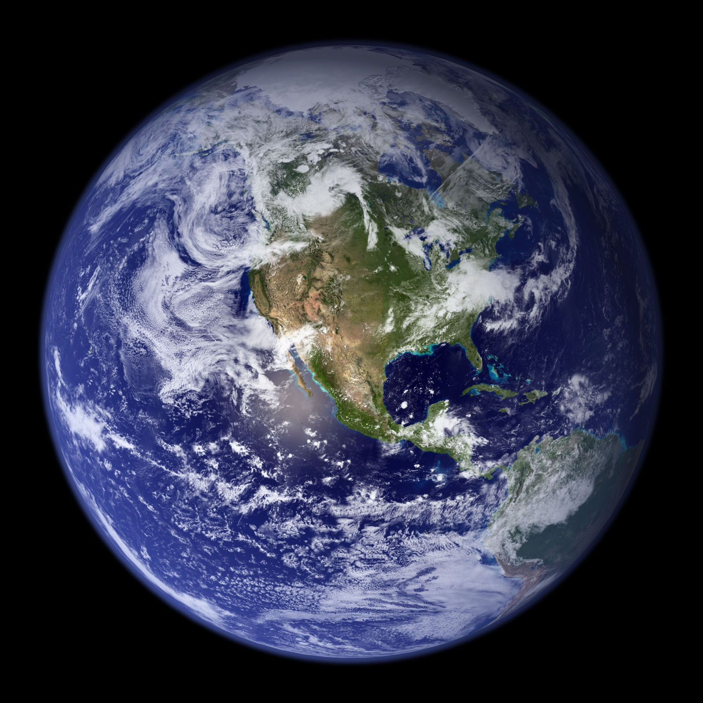

Strip the sky down to nothing. Now add the variables back, one at a time, and watch each one make the forecast exponentially harder.
Not because we are not clever enough, but because the sky will not hold still long enough to be measured. Two weeks is the wall, and the wall is made of mathematics.
And yet, knowing all of that, we built a machine that sees ten days into a chaotic ocean of air. That is the miracle worth being amazed by.
The history, the planetary asides, and the model you can break with your own hands, set apart from the descent for whenever you want them.